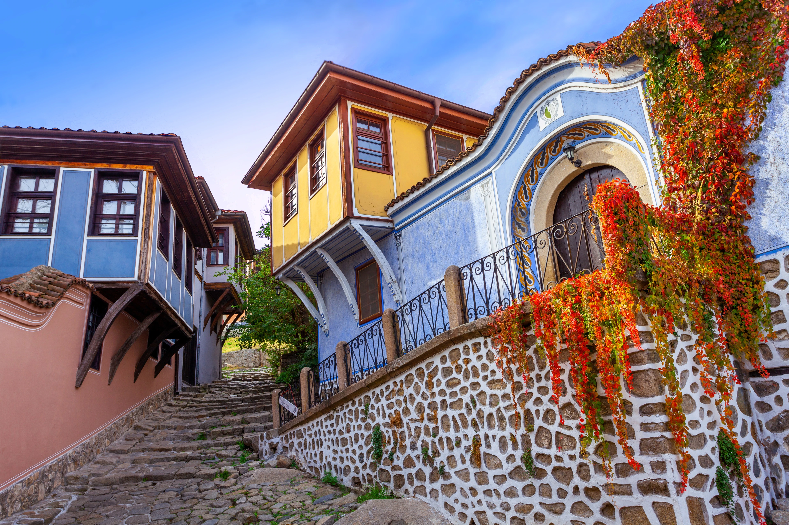
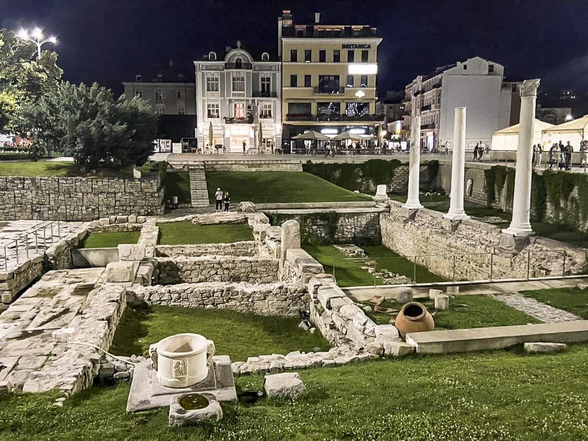
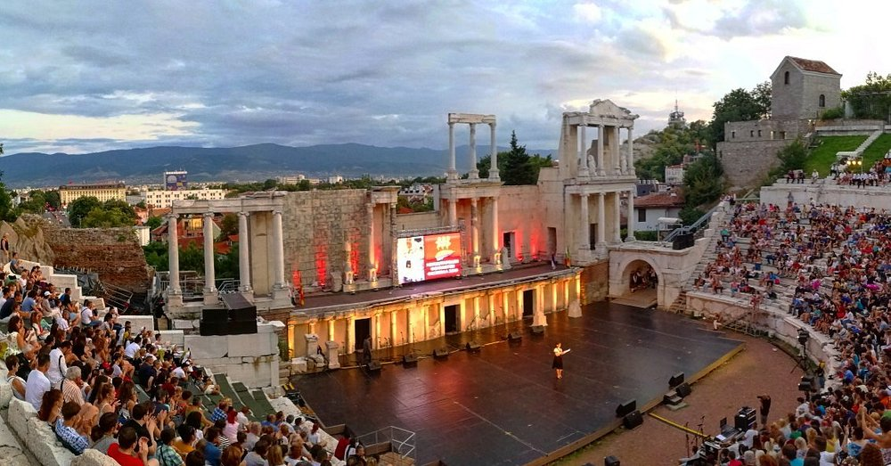
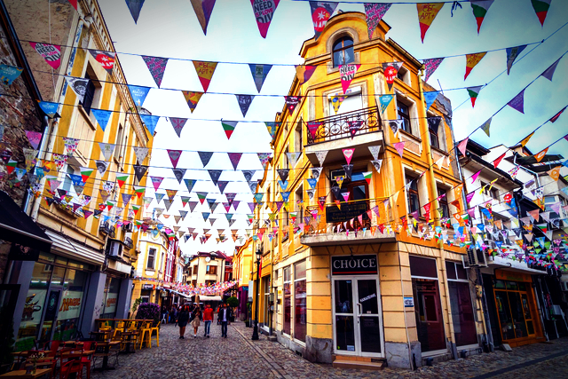
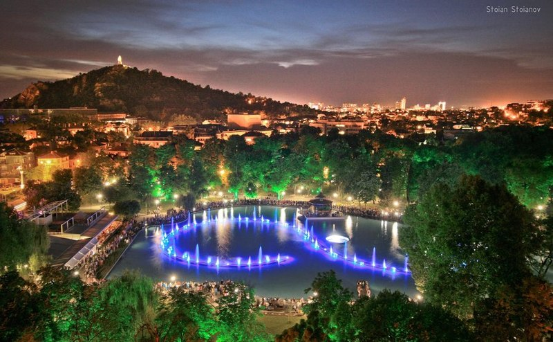
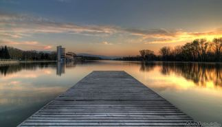
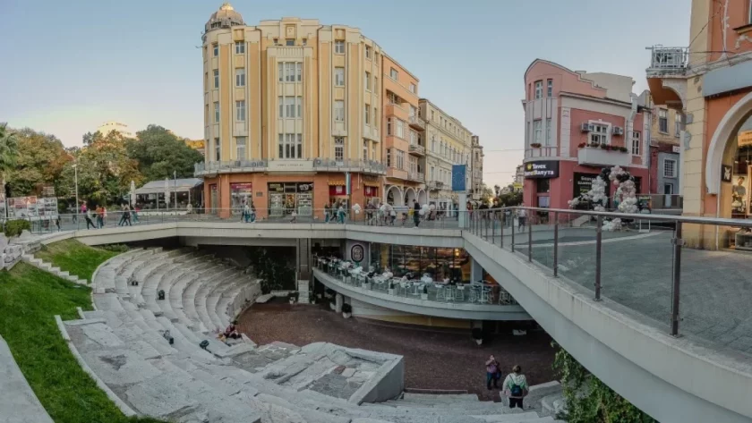
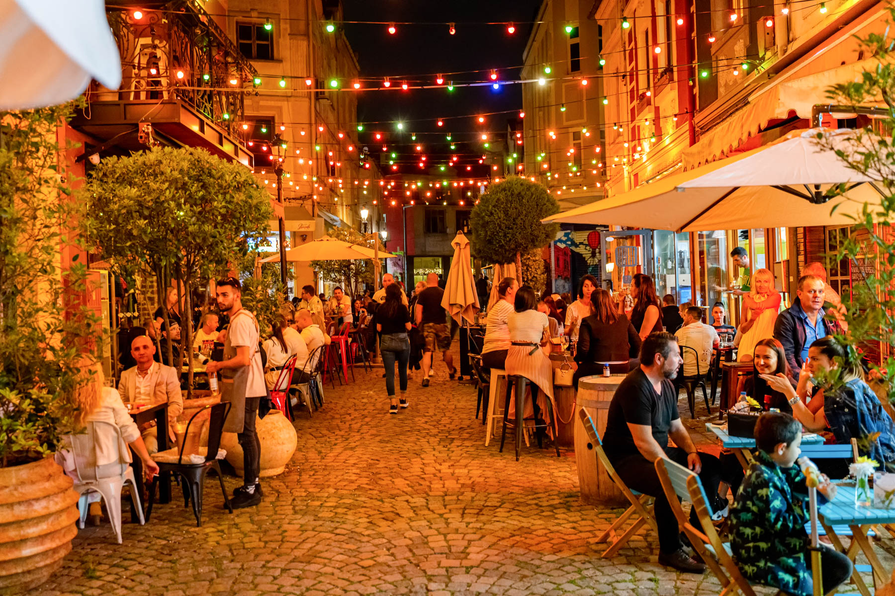
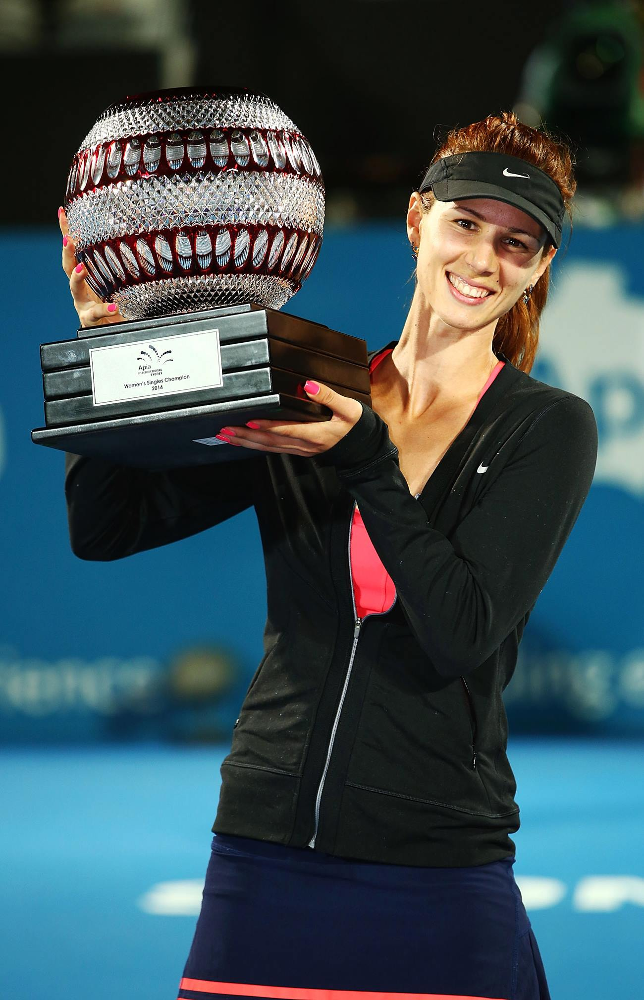
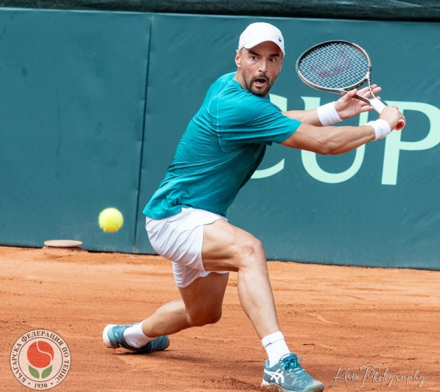

Plovdiv is one of the oldest continuously inhabited cities in the world, with a history spanning over 8,000 years. Founded by the Thracians and later conquered by Philip II of Macedon, the father of Alexander the Great, it became a vital cultural and economic hub. During the Roman era, Plovdiv, known as Philippopolis, flourished as a prominent city featuring grand structures like the Roman Theater and Stadium. The city also experienced Byzantine, Bulgarian, and Ottoman rule, each leaving a unique mark on its architecture and culture. Today, Plovdiv is a charming blend of ancient ruins, Revival-era houses, and modern life, showcasing its rich and diverse past
Roman Theater

Old Town

City Center
Culture and Arts
Plovdiv, a city rich in history, is also a vibrant cultural hub, blending ancient heritage with modern creativity. In 2019, Plovdiv was honored as the European Capital of Culture, a title that highlighted its importance in the European cultural landscape. The city is renowned for its numerous festivals, including the Plovdiv International Fair and the Night of the Museums, which showcase art, music, and theater. Plovdiv’s Kapana Creative District is a thriving area filled with galleries, craft shops, and street art, attracting artists and visitors from around the world. With its mix of traditional and contemporary art forms, Plovdiv continues to inspire both locals and international audiences, solidifying its reputation as a cultural powerhouse


Modern Life in Plovdiv
Plovdiv is a dynamic city that beautifully balances its rich historical heritage with a thriving modern lifestyle. Over the years, it has become a popular destination for young professionals, with a growing tech industry and start-up scene. The city boasts a lively café culture, with trendy spots in the Kapana district and along the main pedestrian street. Plovdiv’s residents enjoy an active lifestyle, with plenty of parks, sports facilities, and cultural events happening throughout the year. The vibrant nightlife, contemporary art spaces, and a strong sense of community make Plovdiv a truly unique place to live and visit




Sports in Plovdiv
Plovdiv is not only known for its ancient history but also for its vibrant sports culture, which has nurtured numerous talented athletes over the years. The city is home to passionate football fans, with two major football clubs, Botev Plovdiv and Lokomotiv Plovdiv, representing the city at the national level. Tennis also holds a special place in Plovdiv, having produced notable players such as Tsvetana Pironkova and Dimitar Kuzmanov, who have put the city on the international tennis map. In athletics, Plovdiv is proud of its legendary athletes like Stefka Kostadinova, the world record holder in high jump, and gymnast Yordan Yovchev, whose success continues to inspire future generations. With its rich sports heritage, Plovdiv remains a hub for athletic achievement and a city that celebrates both tradition and modern sporting excellence
Football
Football holds a special place in Plovdiv’s sports culture, with two major clubs, Botev Plovdiv and Lokomotiv Plovdiv, along with other teams like Maritsa Plovdiv and Spartak Plovdiv. The passion for football runs deep, with legends such as Hristo Stoichkov and Hristo Bonev both originating from Plovdiv. Stoichkov, a standout player during Bulgaria’s golden generation and a star at FC Barcelona, and Bonev, considered one of Bulgaria's finest footballers, have left a lasting legacy. The city’s thriving football culture continues to inspire aspiring players and remains a key part of Bulgaria’s football landscape
Tennis
Tennis has also thrived in Plovdiv, with numerous talented players emerging over the years. Tsvetana Pironkova, known for her impressive career and international recognition, has put Plovdiv on the global tennis map. Rising star Dimitar Kuzmanov has also been making strides on the international stage. The city's dedication to nurturing tennis talent ensures its lasting influence in the sport


Athletics
Plovdiv boasts a rich athletics heritage, having produced some of Bulgaria’s most iconic sports figures. Stefka Kostadinova, the high jump world record holder, remains one of the city’s most celebrated athletes. Yordan Yovchev, a legendary gymnast with numerous Olympic and World Championship medals, also calls Plovdiv his hometown. Their remarkable achievements continue to inspire new generations of athletes across the city and beyond